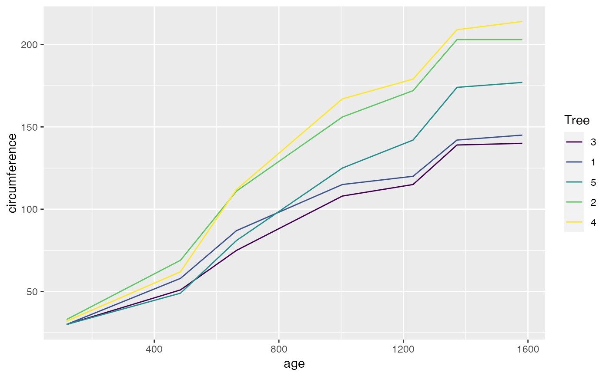
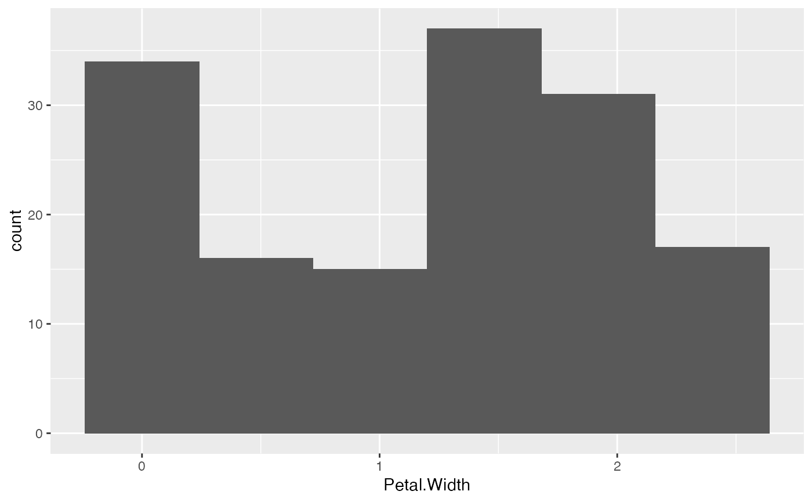
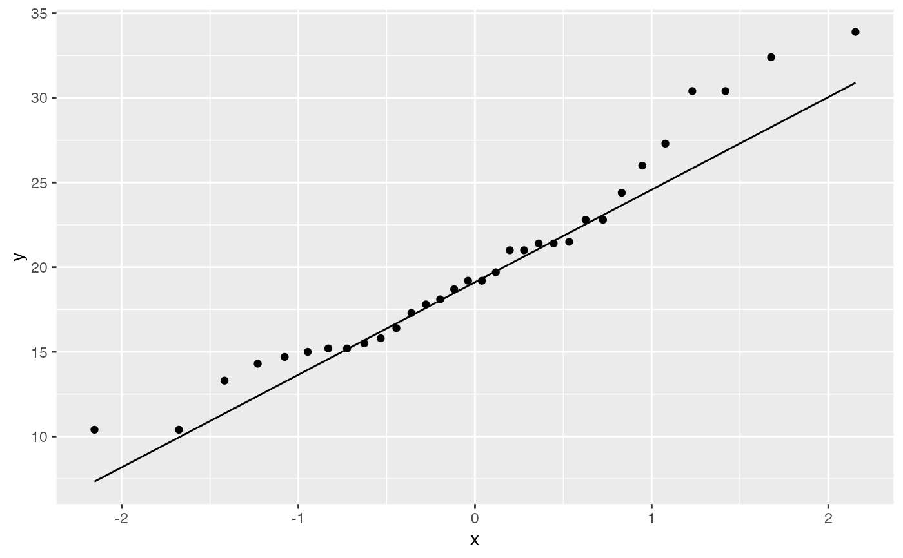
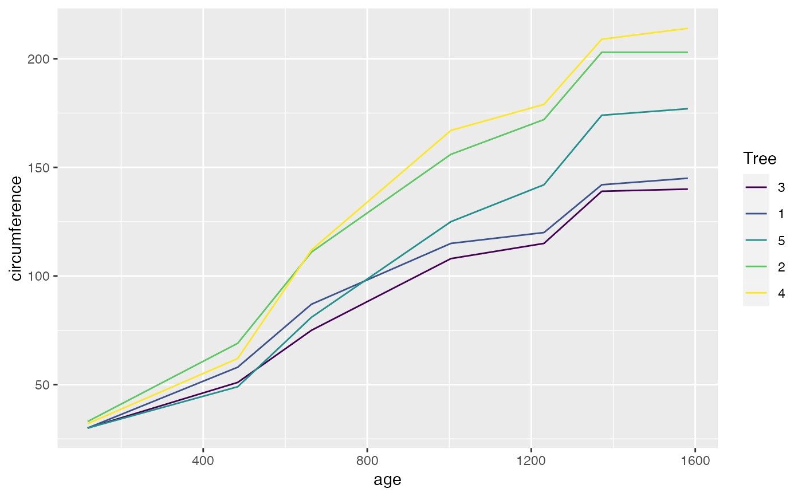
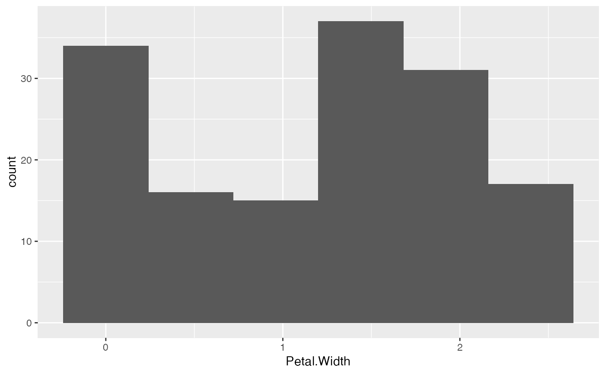
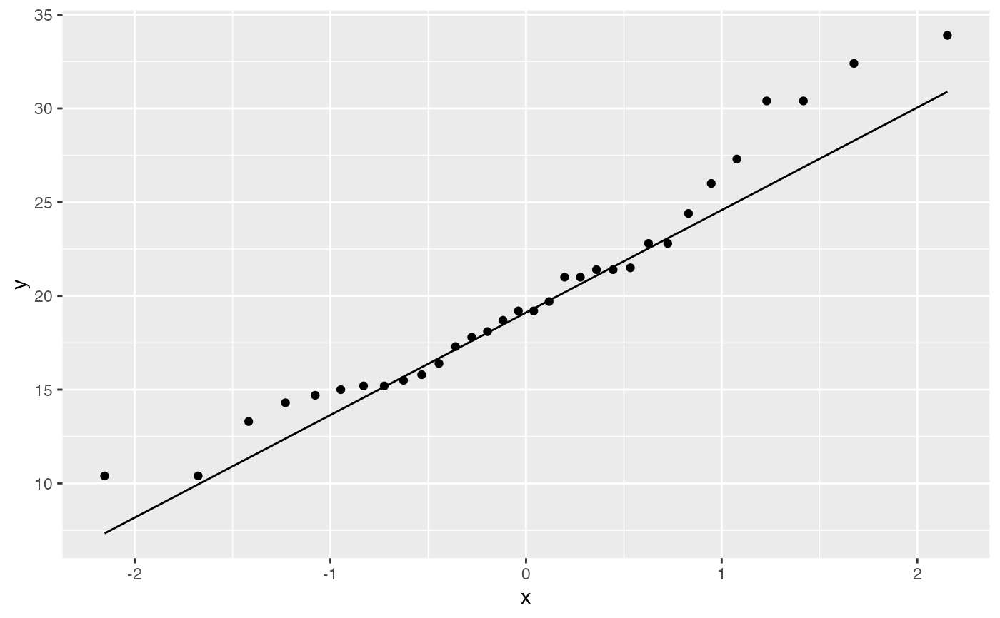

These functions are intended to be used to quickly generate simple
exploratory plots using the package ggplot2.
plot_scatter(data, x, y, ...)
plot_line(data, x, y, ...)
plot_hist(data, x, bin_width = NULL, ...)
plot_qq(data, x, ...)Arguments
- data
A data frame.
- x, y
x and y aesthetics as the bare (unquoted) name of a column in
data.- ...
Additional arguments to be passed to the
ggplot2::aes()function.- bin_width
The width of the bins in a histogram. When
NULL(default), it uses the number of bins inbins(defaults to 30). You can also use one of the character strings"Sturges","scott"or"FD"to use one of the methods to determine the bin width as ingrDevices::nclass.*()
Value
A ggplot object.
Examples
plot_scatter(mtcars, disp, mpg, color = factor(cyl))
 plot_line(Orange, age, circumference, colour = Tree)

plot_hist(iris, Petal.Width, bin_width = "FD")

plot_qq(mtcars, mpg)

plot_line(Orange, age, circumference, colour = Tree)

plot_hist(iris, Petal.Width, bin_width = "FD")

plot_qq(mtcars, mpg)
